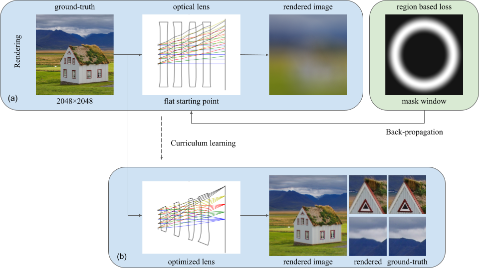

Pipeline of our proposed differentiable ray-tracing model. Starting from a randomly generated design, our model can optimize lens parameters and positions for the best imaging quality. Attention window is dynamically adjusted for a faster training speed and getting out from local minimums.
Abstract
We propose a fully differentiable optical design method enabled by curriculum learning. Preliminary results that our framework is suitable to solve highly non-convex problems like cellphone lens design.